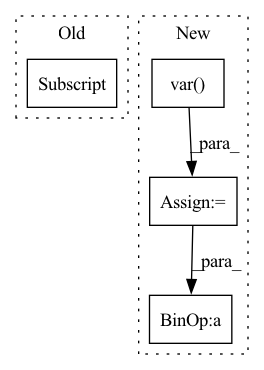

Pattern ID :30333
Before Change
vals = self.wf(lpos)
loss = self.loss(vals,lpos)
cumulative_loss[n] += loss
self.opt.zero_grad()
loss.backward()After Change
locale_ = self.wf.local_energy(pos)
e_ = locale_.mean()
v_ = locale_.var()
print("epoch %d loss %f" %(n,cumulative_loss))
print("variance : %f" % v_)
print("energy : %f" %e_)
obs_dict["energy"].append(e_.detach().numpy().tolist())In pattern: SUPERPATTERN
Frequency: 4
Non-data size: 4
Instances Fragment ID: 89784217
Project Name: nlesc-jcer/qmctorch
Commit Name: 9bcba7c00dbea3a26db38e53b731b6dea7515b50
Time: 2019-06-10
Author: nicolas.gm.renaud@gmail.com
File Name: pyCHAMP/solver/deepqmc.py
M Class Name: DeepQMC
N Class Name: DeepQMC
M Method Name: train(9)
N Method Name: train(9)
M Parent Class: SOLVER_BASE
N Parent Class: SOLVER_BASE
M File Name: pyCHAMP/solver/deepqmc.py
N File Name: pyCHAMP/solver/deepqmc.py
M Start Line: 108
M End Line: 178
N Start Line: 109
N End Line: 185
Before Change
self.register_buffer("beta", torch.zeros(dim))
def forward(self, x):
return F.layer_norm(x, x.shape[-1:] , self.gamma, self.beta)
class ChanLayerNorm(nn.Module):After Change
if self.stable:
x = x / x.amax(dim = -1, keepdim = True).detach()
var = torch.var( x, dim = -1, unbiased = False, keepdim = True)
mean = torch.mean(x, dim = -1, keepdim = True)
return (x - mean) * (var + self.eps).rsqrt() * self.g
class ChanLayerNorm(nn.Module):
def __init__(self, dim, eps = 1e-5, stable = False): Fragment ID: 89784216
Project Name: lucidrains/imagen-pytorch
Commit Name: 5fca6872dad964bc20f6213aec267487cafc1a77
Time: 2022-07-18
Author: lucidrains@gmail.com
File Name: imagen_pytorch/imagen_pytorch.py
M Class Name: LayerNorm
N Class Name: LayerNorm
M Method Name: forward(2)
N Method Name: forward(2)
M Parent Class: nn.Module
N Parent Class: nn.Module
M File Name: imagen_pytorch/imagen_pytorch.py
N File Name: imagen_pytorch/imagen_pytorch.py
M Start Line: 380
M End Line: 380
N Start Line: 381
N End Line: 386
Before Change
if k == "local_energy":
e = np.mean(self.obs_dict["local_energy"][-1])
err = np.std(self.obs_dict["local_energy"][-1] )
print("energy : %f +/- %f" % (e, err))
elif verbose:After Change
eloc = self.obs_dict["local_energy"][-1]
e = np.mean(eloc)
v = np.var( eloc)
err = np.sqrt(v/ len(eloc))
print("energy : %f +/- %f" % (e, err))
print("variance : %f" % np.sqrt(v))
Fragment ID: 89784219
Project Name: nlesc-jcer/qmctorch
Commit Name: 42e5352bfa8dc546b8dd04ce66627fa929e52a4a
Time: 2020-03-18
Author: nicolas.gm.renaud@gmail.com
File Name: deepqmc/solver/solver_base.py
M Class Name: SolverBase
N Class Name: SolverBase
M Method Name: print_observable(3)
N Method Name: print_observable(3)
M Parent Class: object
N Parent Class: object
M File Name: deepqmc/solver/solver_base.py
N File Name: deepqmc/solver/solver_base.py
M Start Line: 121
M End Line: 122
N Start Line: 122
N End Line: 127
Before Change
x = np.concatenate([v for k, v in x.items()], axis=1)
batch_mean = np.mean(x, axis=0)
batch_var = np.var(x, axis=0)
batch_count = x.shape[0]
self._update_from_moments(batch_mean, batch_var, batch_count)
def update_vec(self, x):
// it works just fine for scalar rewardAfter Change
x = x.detach().view(-1, x_dim)
batch_mean = x.mean(0)
batch_var = x.var( 0)
batch_count = x.size(0)
delta = batch_mean - self.mean
total_count = self.count + batch_count
new_mean = self.mean + delta * batch_count / total_count
m_a = self.var * self.count
m_b = batch_var * batch_count
m_2 = m_a + m_b + torch.square(delta) * self.count * batch_count / total_count
self.mean = new_mean
self.var = m_2 / total_count
self.count = total_count
def state_dict(self, *args, **kwargs): Fragment ID: 89784205
Project Name: cherrypiesexy/imitation_learning
Commit Name: f602adb4b1fb696c763e0e860da99a6e9260c200
Time: 2021-01-02
Author: interga@post-hardcore.ru
File Name: algorithms/normalization.py
M Class Name: RunningMeanStd
N Class Name: RunningMeanStd
M Method Name: update(2)
N Method Name: update(2)
M Parent Class: nn.Module
N Parent Class:
M File Name: algorithms/normalization.py
N File Name: algorithms/normalization.py
M Start Line: 14
M End Line: 19
N Start Line: 29
N End Line: 46